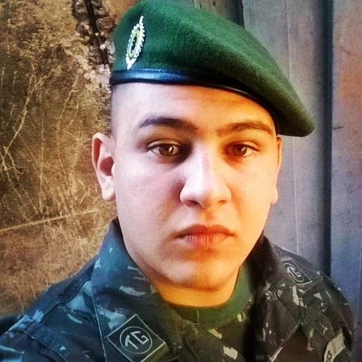

24 anos, Noivo, natural de Franca/SP

A tecnologia é uma palavra
que descreve alguma coisa
que ainda não funciona.
(Douglas Adams)
Sou um cara que gosta de fazer amizade, bem descontraido gosto de sair com minha noiva,
sempre que posso realizo uma atividade no
ar livre, amo animais tenho dois pitbull e sou
bem aventureiro, passei pelo tiro de guerra onde tive uma experiencia incrivel.
Comecei a trabalhar com 12 anos como estoquista, sai e fui me aventurar no mundo da tecnologia onde tive
minha primeira experiência como tecnico de impressora em 4 meses fui promovido para tecnico de computador e logo
depois virei tecnico de informatica, entrei na faculdade de engenharia de software porem tive que abandonar a mesma
mesmo assim não desisti de ter uma formação então comecei a fazer analise e desenvolvimento de software, onde logo
depois de um ano consegui uma vaga de estagio como analista de qualidade de software onde fiquei por um mês e fui
promovido
a líder de equipe, por conta da bagagem que ja tinha de vida e é onde estou até hoje com muito orgulho e me
tornei
reflexo de todas as experiências que passei.